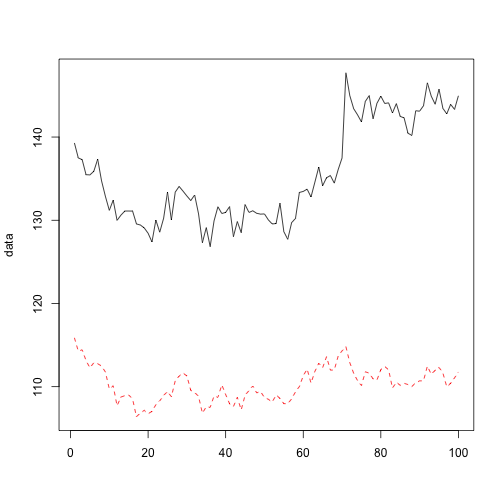

是Google开源的一个R包，主要功能是
This R package implements an approach to estimating the causal effect of a designed intervention on a time series.
这个R包在时间序列数据上实现了一种能够对设计的干预的进行因果推断的方法。
MJJ08398
数据挖掘
是Google开源的一个R包，主要功能是
This R package implements an approach to estimating the causal effect of a designed intervention on a time series.
这个R包在时间序列数据上实现了一种能够对设计的干预的进行因果推断的方法。
For example, how many additional daily clicks were generated by an advertising campaign? Answering a question like this can be difficult when a randomized experiment is not available. The package aims to address this difficulty using a structural Bayesian time-series model to estimate how the response metric might have evolved after the intervention if the intervention had not occurred.
例如，通过一次广告提升竞赛每日会增加多少额外的点击量？当随机实验不可用的时候，回答这个问题是很难的。这个包的目的是通过使用结构化的贝叶斯时间序列模型来 来预估如果这些干预加入前后的响应值的变化来解决这一难题。
set.seed(42)
x1 <- 100 + arima.sim(model = list(ar = 0.999), n = 100)
y <- 1.2 * x1 + rnorm(100)
y[71:100] <- y[71:100] + 10
data <- cbind(y, x1)
matplot(data, type = "l")
